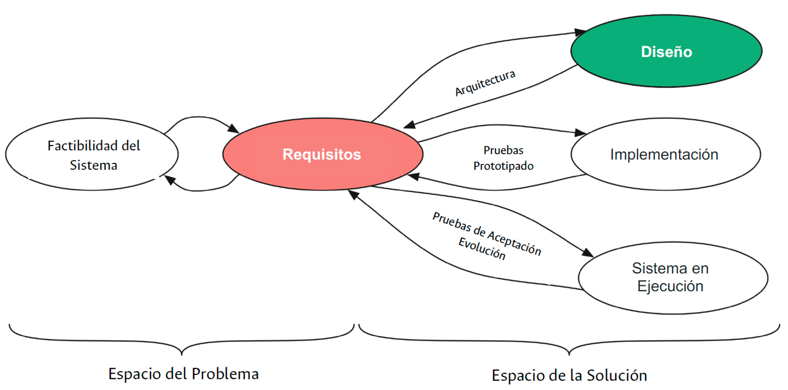

Unidad 4: Ingeniería de requisitos#
Contenido de la unidad#

Conceptos básicos de la ingeniería de requisitos.#
La base de la ingeniería de requisitos es:
Debemos entender qué vamos a desarrollar antes de desarrollarlo.
En la mayoría de los casos, es importante tener la guía de lo que se quiere hacer antes de ir a desarrollar desmedidamente (“a la loca”) algún sistema.
Tener siempre en mente este precepto puede ahorrarnos muchísimo dinero a la hora de desarrollar.

Definición de requisitos#
ü߆ Definici√≥n
Una condición o capacidad que necesita un usuario para resolver un problema o lograr un objetivo (Glosario de IEEE - 1997).
ü߆ Definici√≥n
Una condición o capacidad que debe tener un sistema o un componente para satisfacer un contrato, especificación u otro documento formalmente impuesto (Glosario de IEEE - 1997).
ü߆ Definici√≥n
Una propiedad que debe presentar el software, para resolver un problema del mundo real (Software Engineering Body of Knowledge).
ü߆ Definici√≥n
Descripción de lo que el sistema debe hacer: el servicio que ofrece y las restricciones en su operación (Ian Sommerville).
¿Qué dice el ChatGPT?#
En ingeniería de software, un requisito es una característica o función que el software debe tener para satisfacer las necesidades de los usuarios. Pueden ser funcionales o no funcionales, explícitos o implícitos. Identificar, documentar, analizar, validar y gestionar los requisitos es crucial para garantizar que el software entregado cumpla con las necesidades y expectativas de los usuarios finales y otras partes interesadas. (ChatGPT)
Definición de “Ingeniería de requisitos”#
El término “ingeniería de requisitos” es ampliamente usado para denotar el manejo sistemático de los requisitos (SWEBOK). Sirve para Plasmar deseos – y ayudar a ponerse de acuerdo a los interesados en la especificación de una solución.
Pretende la obtención de requisitos concisos y claros, que permitan tener una visión precisa del sistema que se desea desarrollar.
Involucra todas las actividades relacionadas con la obtención, evaluación y documentación de los requisitos.
Definición formal de “Ingeniería de requisitos”#
“La ingeniería de requisitos es el proceso de establecer las necesidades (servicios) de los stakeholders que serán resueltas por el software a desarrollar y las restricciones sobre las que debe operar dicho software”.

Los requisitos son las descripciones de las necesidades y las restricciones que se generan durante el proceso de ingeniería de requisitos.
Propiedades de un requisito#
Verificable: Se debe poder generar un producto o un indicador que mida numéricamente.
Ambiguo: Un requisito no puede ser interpretado de más de una manera. Así se evitan inconvenientes a futuro con el cliente.
Priorizar: Los requisitos deben poder ordenarse de manera que puedan priorizarse.
Evitar el uso de juicios de valor en la elaboración de los mismos.
¿De donde obtengo los requisitos?: Fuentes generales de requisitos#
Note
Normatividad importante (solo por mencionar):
ISO 27001 que es la de seguridad e integridad de los datos.
ISO 25000 Establece los parámetros para evaluar la calidad del software.
Grupos de interés: “Stakeholders”#
Estos son los que entienden cómo funciona el negocio para el cual yo realizo el desarrollo. Entiende la lógica del negocio y las necesidades que se requieren suplir.
Ellos también conocen las restricciones de tiempo y dinero que existen en el proyecto
Algunos stakeholders son:
El gobierno
El CEO de la compañía
EL cliente
Los socios de una compañía
Una organización
etc.
¿De dónde vienen los requisitos?#
Los Stakeholders son los que me dan las pautas y necesidades de un proyecto de software. Ellos le permiten al equipo de desarrollo responder las preguntas que se plantean en la figura de arriba.
Técnicas para obtención de requisitos#
Entrevista Stakeholders
Workshops Grupales
Documentación
Sistema existente o legado que se está actualizando
Software similar
Prototipos
Observación directa
Cuestionarios
Lluvia de ideas
Contextualizando los requisitos#
Importancia de la ingeniería de requisitos: MEME#
Costos relativos basados en el tiempo de deteccioÃÅn de errores.#
Esta gráfica muestra el costo de corregir un error en cada una de las fases de un proceso de software para concientizar.
Actividades para describir los requerimientos#
Actividades: Adquisición de requisitos/Elicitación#
Es todo un conjunto de actividades para poder conocer el contexto y las necesidades de los clientes y usuarios, que se convertirán en los requisitos del sistema.
No se trata simplemente de recolectar información
Adquisición: Cuestionarios#
Consideraciones para los cuestionarios#
Tip
Ejercicio…
Se desea desarrollar un sistema de mesa de ayuda (soporte técnico). Se elaborará un cuestionario para los empleados de la empresa, que solicitan el soporte técnico.
Escriba un objetivo para este Cuestionario.
Escriba por lo menos tres preguntas.
Actividades: Análisis#
También se conoce como elaboración y negociación. Incluye actividades de organización, revisión y priorización de los requisitos.
Permite obtener un conjunto más claro y refinado de los requisitos.
Actividades: Especificación#
También conocida como documentación. Los requisitos se representan usando diferentes modelos, como diagramas de contexto, de casos de uso, de actividades, conceptuales, etc.
También se describen con mayor detalle usando lenguaje natural o formal,generalmente basado en formatos.
Actividades: Validación#
También conocida como verificación. Busca garantizar que los requisitos especificados cumplen lineamientos de calidad (completos, consistentes, no ambiguos, etc.). Además, el cliente o usuario revisan y confirman que los requisitos especificados corresponden a lo que realmente necesitan.
Actividades: Administración#
Involucra manejar versiones de los requisitos, tener procesos de cambio y actualizar la información y los planes correspondientes.
Se encarga de controlar y hacer seguimiento a los requisitos y sus cambios durante el desarrollo y mantenimiento del software.
Important
Realizar la Actividad 1 de la sección de evaluemos lo aprendido… Vamos allá.